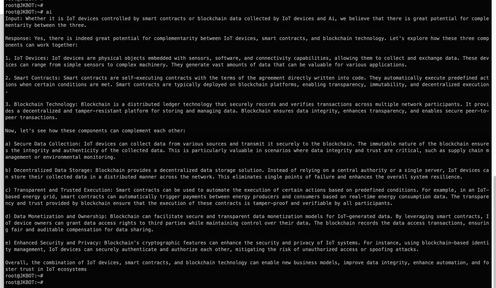

In this fast-moving world of technology, new inventions and technologies are emerging every day to shape our future. At JK Labs, we recognize this trend and focus on the development of Internet of Things (IoT) and Blockchain technologies from our personal interests. In addition to our passion for IoT and Blockchain technologies, we at JK Labs are also deeply involved in the development of Artificial Intelligence (AI) solutions. We recognize the tremendous potential of AI to transform industries and drive innovation. By combining AI with the Internet of Things and blockchain, we aim to create powerful and intelligent systems that will revolutionize industries.
The Internet of Things (IoT) has begun to change the way we live, with devices ranging from smart homes and medical devices to industrial machinery becoming smarter and more connected. At JK Lab, we are further exploring the potential of these connections, trying to find new usage scenarios and applications that will make the user experience more convenient and efficient.
JK Lab's vision is to be a leading force in technology innovation, capitalizing on cutting-edge advances in the Internet of Things (IoT), blockchain, and artificial intelligence (AI). We strive to develop transformative solutions that address real-world challenges and drive positive change across industries.
At JK Lab, we are not only pursuing new trends in technology, but more importantly, we are pursuing innovation and practicality. We believe that only through continuous experimentation and trial and error can we ensure that we always stay at the forefront of technology and build better solutions for the world of tomorrow.
I am JackyKit, if you are interested, please contact me. Twitter
Find the Jacky Kit Github
Our Layer 1 blockchain and IBC in Cosmos https://interchaininfo.zone/indexes/memenetwork
